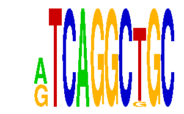

family_8 |
|---|
|  |
| Download PWM |
| Download instances (motifs) |
| Show motif distribution |
Query_ID | Query_Consensus | Subject_Name | Source_DB | Subject_ID | Length | Orientation | Offset | Divergence | Overlap | Subject_Consensus |
|---|---|---|---|---|---|---|---|---|---|---|
| family_8 | ATCAGGCTGC | TGAYRTCA | JASPAR | PF0009 | 8 | reverse-complement | -4 | 0.148 | 4 | TGACGTCA |
| family_8 | ATCAGGCTGC | TGAYRTCA | JASPAR | PF0009 | 8 | as given | -4 | 0.178 | 4 | TGACGTCA |
| family_8 | ATCAGGCTGC | CTGCAGY | JASPAR | PF0101 | 7 | as given | 6 | 0.298 | 4 | CTGCAGC |
| family_8 | ATCAGGCTGC | CTGRYYYNATT | JASPAR | PF0153 | 11 | reverse-complement | -6 | 0.469 | 5 | CTGACCTNATT |
| family_8 | ATCAGGCTGC | CTGCAGY | JASPAR | PF0101 | 7 | reverse-complement | 5 | 0.611 | 5 | CTGCAGC |
| family_8 | ATCAGGCTGC | TTANTCA | JASPAR | PF0064 | 7 | as given | -3 | 0.617 | 4 | TTANTCA |
| family_8 | ATCAGGCTGC | TGANTCA | JASPAR | PF0007 | 7 | as given | -3 | 0.621 | 4 | TGANTCA |
| family_8 | ATCAGGCTGC | TGANTCA | JASPAR | PF0007 | 7 | reverse-complement | -3 | 0.696 | 4 | TGANTCA |
Sequence | Start_position (from start) | Start_position (from end) | Average conservation | Best conservation score | Instance_with_best_CS | Best_Z-score | Instance_with_best_ZS | Strand |
|---|---|---|---|---|---|---|---|---|
| chr1:72981600-72984300 | 79 | 89 | 0.9997 | 1 | RTCAGGCKGC | 12.745697 | RTCAGGCTGC | 1 |
| chr10:30564964-30566700 | 452 | 462 | 0.5686 | 0.829 | RTCAGGCTGC | 14.1042595 | RTCAGGCKGC | 1 |
| chr2:17376900-17378100 | 984 | 994 | 0.0462 | 0.295 | RTCAGGCKGC | 12.745697 | RTCAGGCTGC | 1 |
| chr14:22257007-22258007 | 339 | 349 | 0.0017 | 0.004 | RTCAGGCTGC | 14.1042595 | RTCAGGCKGC | 1 |
| chr10:116478300-116480100 | 1335 | 1345 | 0.0041 | 0.023 | RTCAGGCTGC | 14.1042595 | RTCAGGCKGC | 1 |
| chr16:91853000-91854900 | 699 | 709 | 0.0015 | 0.005 | RTCAGGCKGC | 12.745697 | RTCAGGCTGC | -1 |
| chr6:24504000-24505317 | 1237 | 1247 | 0.0015 | 0.005 | RTCAGGCKGC | 12.745697 | RTCAGGCTGC | 1 |
| chr12:74718426-74720200 | 1499 | 1509 | 0.008 | 0.012 | RTCAGGCTGC | 14.1042595 | RTCAGGCKGC | 1 |
| chr5:148661430-148663100 | 746 | 756 | 0.986 | 1 | RTCAGGCKGC | 12.745697 | RTCAGGCTGC | 1 |
| chr9:77192100-77194257 | 1456 | 1466 | 0.0001 | 0.001 | RTCAGGCTGC | 14.1042595 | RTCAGGCKGC | 1 |
| chr11:82738400-82739800 | 255 | 265 | 0.0037 | 0.009 | RTCAGGCKGC | 14.1042595 | RTCAGGCKGC | 1 |
| chr1:92931200-92933040 | 1045 | 1055 | 0.0026 | 0.005 | RTCAGGCKGC | 12.745697 | RTCAGGCTGC | -1 |